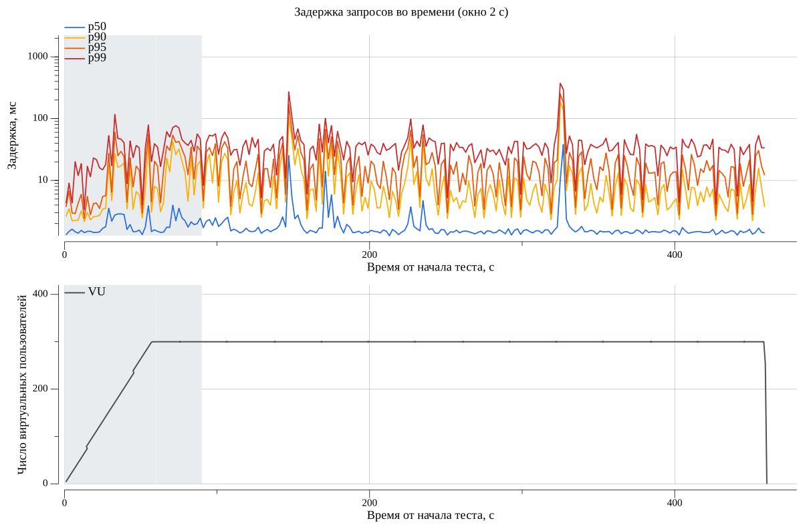
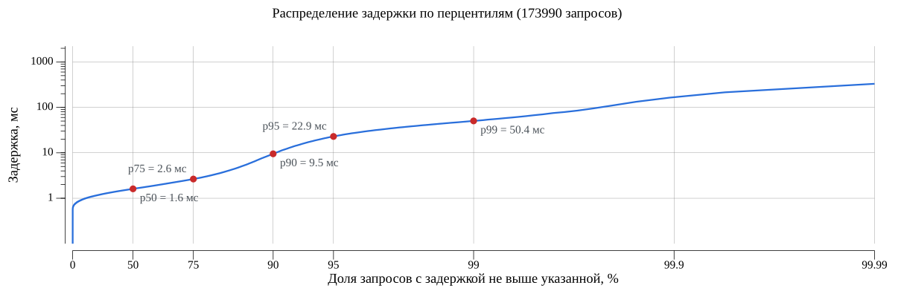
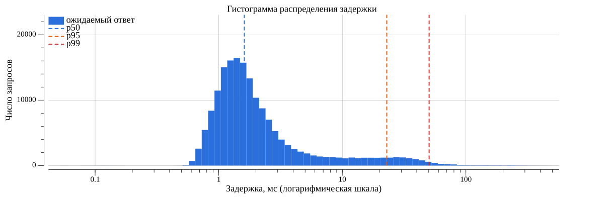
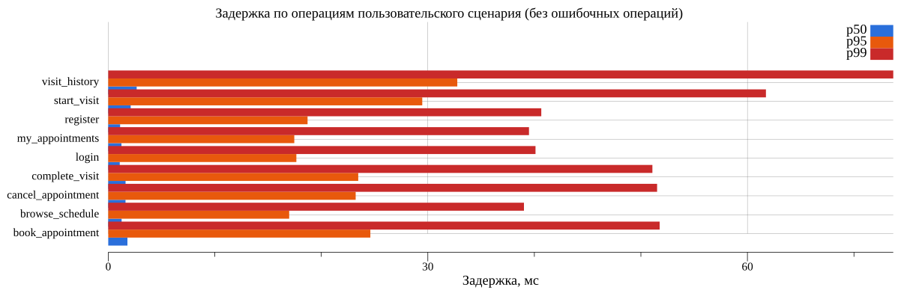
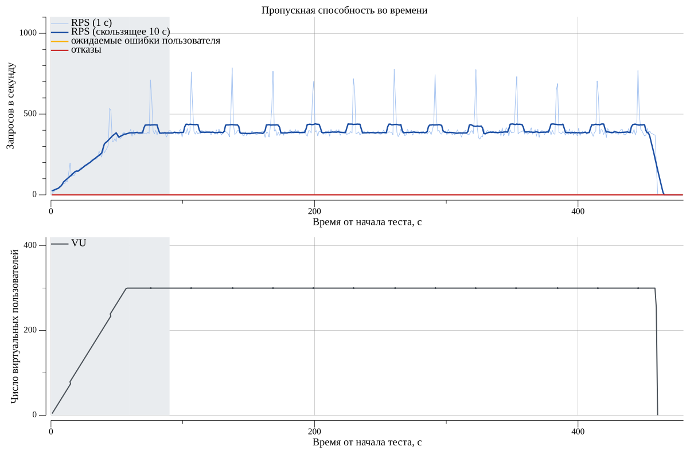
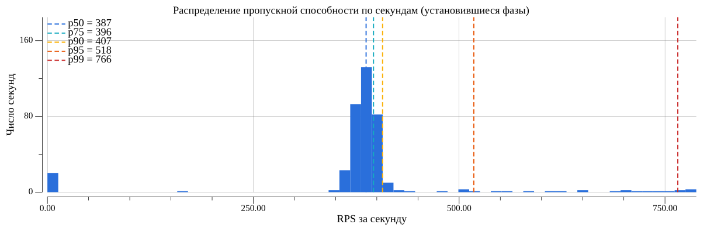
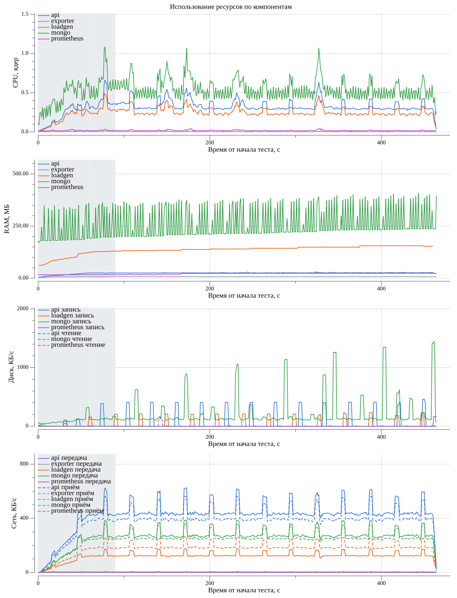

Фиксированная нагрузка
Запросов173990
RPS среднее / медиана362 / 383
p50 / p95 задержки1.61 / 22.9 мс
p99 задержки50.4 мс
Отказы0.00%
Ошибочные операции0.00%
Ошибочных операций: задано 0%, фактически 0.0%. Отказы 0.00%. Дрейф p95 между первым и последним отрезком ×0.50, RPS ×0.74. Тренд памяти: api 10.7 МБ/ч, exporter 0.67 МБ/ч, loadgen 271 МБ/ч, mongo 340 МБ/ч, prometheus 53.1 МБ/ч.
Задержка
| Задержка, мс | count | min | mean | p50 | p75 | p90 | p95 | p99 | max |
|---|---|---|---|---|---|---|---|---|---|
| Все запросы | 173990 | 0.04 | 4.77 | 1.61 | 2.65 | 9.50 | 22.9 | 50.4 | 562 |
| Корректные операции | 173990 | 0.04 | 4.77 | 1.61 | 2.65 | 9.50 | 22.9 | 50.4 | 562 |
| Ошибочные операции | 0 | — | — | — | — | — | — | — | — |



Операции пользовательского сценария
| Операция | count | min | mean | p50 | p75 | p90 | p95 | p99 | max | Отказы | Ошибочные |
|---|---|---|---|---|---|---|---|---|---|---|---|
| book_appointment | 25214 | 0.04 | 5.15 | 1.80 | 2.70 | 10.8 | 24.6 | 51.8 | 476 | 0.00% | 0.00% |
| browse_schedule | 25248 | 0.07 | 3.46 | 1.25 | 1.78 | 5.87 | 17.0 | 39.0 | 289 | 0.00% | 0.00% |
| cancel_appointment | 7413 | 0.08 | 4.86 | 1.62 | 2.46 | 10.1 | 23.2 | 51.5 | 236 | 0.00% | 0.00% |
| complete_visit | 17701 | 0.10 | 4.89 | 1.63 | 2.50 | 10.2 | 23.5 | 51.1 | 321 | 0.00% | 0.00% |
| login | 25252 | 0.10 | 3.35 | 1.08 | 1.56 | 5.99 | 17.7 | 40.1 | 234 | 0.00% | 0.00% |
| my_appointments | 25179 | 0.06 | 3.42 | 1.24 | 1.76 | 5.99 | 17.5 | 39.5 | 209 | 0.00% | 0.00% |
| register | 5166 | 0.58 | 3.52 | 1.11 | 1.59 | 6.30 | 18.7 | 40.6 | 217 | 0.00% | 0.00% |
| start_visit | 17734 | 0.07 | 6.30 | 2.11 | 3.32 | 13.8 | 29.5 | 61.7 | 356 | 0.00% | 0.00% |
| visit_history | 25083 | 0.05 | 7.55 | 2.67 | 4.46 | 16.5 | 32.8 | 73.7 | 562 | 0.00% | 0.00% |

Пропускная способность
| Показатель | count | min | mean | p50 | p75 | p90 | p95 | p99 | max |
|---|---|---|---|---|---|---|---|---|---|
| RPS за секунду | 480 | 0.00 | 362 | 383 | 395 | 405 | 510 | 761 | 787 |


Фазы нагрузки
| Участок | VU | RPS ср. | RPS p50 | RPS p5 | p50 мс | p95 мс | p99 мс | Отказы | CPU api | CPU mongo | RAM api, МБ | SLO |
|---|---|---|---|---|---|---|---|---|---|---|---|---|
| разгон | 300 | 216 | 206 | 31.5 | 1.73 | 19.8 | 47.0 | 0.00% | 0.21 | 0.43 | 15.5 | да |
| прогрев | 300 | 402 | 384 | 367 | 2.02 | 32.3 | 54.2 | 0.00% | 0.39 | 0.62 | 25.2 | да |
| стабильная нагрузка | 300 | 382 | 387 | 75.6 | 1.58 | 22.2 | 50.2 | 0.00% | 0.33 | 0.55 | 25.9 | да |
Динамика длительной нагрузки
| Участок | VU | RPS ср. | RPS p50 | RPS p5 | p50 мс | p95 мс | p99 мс | Отказы | CPU api | CPU mongo | RAM api, МБ | SLO |
|---|---|---|---|---|---|---|---|---|---|---|---|---|
| 1/5 | 300 | 401 | 388 | 364 | 1.76 | 28.8 | 59.7 | 0.00% | 0.36 | 0.59 | 25.3 | да |
| 2/5 | 300 | 405 | 387 | 369 | 1.66 | 25.6 | 51.1 | 0.00% | 0.36 | 0.58 | 25.9 | да |
| 3/5 | 300 | 406 | 388 | 371 | 1.48 | 14.4 | 34.3 | 0.00% | 0.31 | 0.51 | 25.8 | да |
| 4/5 | 300 | 400 | 386 | 362 | 1.54 | 24.9 | 85.8 | 0.00% | 0.34 | 0.55 | 26.3 | да |
| 5/5 | 300 | 298 | 380 | 0.00 | 1.46 | 14.3 | 35.6 | 0.00% | 0.30 | 0.50 | 26.2 | да |
| Компонент | Тренд памяти на установившемся участке, МБ/ч |
|---|---|
| api | 10.7 |
| exporter | 0.67 |
| loadgen | 271 |
| mongo | 340 |
| prometheus | 53.1 |
Использование ресурсов
| Компонент | Метрика | min | max | mean | median | p95 |
|---|---|---|---|---|---|---|
| api | CPU, ядер | 0.01 | 0.66 | 0.32 | 0.30 | 0.48 |
| api | Троттлинг CPU, с/с | 0.00 | 0.03 | 0.00 | 0.00 | 0.00 |
| api | Чтение с диска, КБ/с | 0.00 | 59.0 | 0.45 | 0.00 | 0.00 |
| api | Запись на диск, КБ/с | 0.00 | 458 | 52.3 | 0.00 | 407 |
| api | RAM (working set), МБ | 3.35 | 30.7 | 24.5 | 25.7 | 26.9 |
| api | Сеть, приём КБ/с | 0.11 | 563 | 381 | 392 | 538 |
| api | Сеть, передача КБ/с | 0.09 | 625 | 421 | 432 | 596 |
| api | Процессы и потоки | 7.00 | 15.0 | 8.86 | 9.00 | 9.00 |
| exporter | CPU, ядер | 0.00 | 0.01 | 0.00 | 0.00 | 0.01 |
| exporter | Троттлинг CPU, с/с | 0.00 | 0.00 | 0.00 | 0.00 | 0.00 |
| exporter | Чтение с диска, КБ/с | 0.00 | 0.00 | 0.00 | 0.00 | 0.00 |
| exporter | Запись на диск, КБ/с | 0.00 | 0.00 | 0.00 | 0.00 | 0.00 |
| exporter | RAM (working set), МБ | 2.64 | 8.05 | 7.46 | 7.55 | 8.03 |
| exporter | Сеть, приём КБ/с | 0.21 | 0.68 | 0.50 | 0.48 | 0.67 |
| exporter | Сеть, передача КБ/с | 0.97 | 5.70 | 4.21 | 4.04 | 5.62 |
| exporter | Процессы и потоки | 5.00 | 5.00 | 5.00 | 5.00 | 5.00 |
| loadgen | CPU, ядер | 0.01 | 0.49 | 0.25 | 0.23 | 0.36 |
| loadgen | Троттлинг CPU, с/с | 0.00 | 0.00 | 0.00 | 0.00 | 0.00 |
| loadgen | Чтение с диска, КБ/с | 0.00 | 0.00 | 0.00 | 0.00 | 0.00 |
| loadgen | Запись на диск, КБ/с | 0.00 | 233 | 25.6 | 0.00 | 208 |
| loadgen | RAM (working set), МБ | 60.7 | 156 | 137 | 140 | 156 |
| loadgen | Сеть, приём КБ/с | 1.72 | 265 | 179 | 183 | 251 |
| loadgen | Сеть, передача КБ/с | 1.45 | 176 | 121 | 123 | 171 |
| loadgen | Процессы и потоки | 7.00 | 9.00 | 8.37 | 8.00 | 9.00 |
| mongo | CPU, ядер | 0.09 | 1.08 | 0.54 | 0.53 | 0.77 |
| mongo | Троттлинг CPU, с/с | 0.00 | 0.65 | 0.15 | 0.14 | 0.31 |
| mongo | Чтение с диска, КБ/с | 0.00 | 45.1 | 0.55 | 0.00 | 0.00 |
| mongo | Запись на диск, КБ/с | 7.36 | 1444 | 200 | 120 | 874 |
| mongo | RAM (working set), МБ | 172 | 406 | 257 | 230 | 382 |
| mongo | Сеть, приём КБ/с | 0.11 | 361 | 243 | 250 | 345 |
| mongo | Сеть, передача КБ/с | 0.04 | 388 | 260 | 269 | 365 |
| mongo | Процессы и потоки | 39.0 | 108 | 79.7 | 79.0 | 103 |
| prometheus | CPU, ядер | 0.01 | 0.05 | 0.02 | 0.02 | 0.03 |
| prometheus | Троттлинг CPU, с/с | 0.00 | 0.00 | 0.00 | 0.00 | 0.00 |
| prometheus | Чтение с диска, КБ/с | 0.00 | 161 | 1.31 | 0.00 | 0.00 |
| prometheus | Запись на диск, КБ/с | 0.00 | 7.00 | 0.62 | 0.00 | 5.00 |
| prometheus | RAM (working set), МБ | 16.6 | 27.8 | 21.5 | 23.3 | 23.9 |
| prometheus | Сеть, приём КБ/с | 1.42 | 5.70 | 4.22 | 4.04 | 5.62 |
| prometheus | Сеть, передача КБ/с | 0.32 | 0.71 | 0.51 | 0.48 | 0.67 |
| prometheus | Процессы и потоки | 7.00 | 15.0 | 7.39 | 7.00 | 8.00 |

Коды ответов
| Код | Запросов |
|---|---|
| 200 | 125876 |
| 201 | 48114 |
Окружение прогона
| Компонент | Логические CPU | Квота CPU | Резерв RAM, МБ | Лимит RAM, МБ | Образ | ID образа |
|---|---|---|---|---|---|---|
| api | 0,1 | 1 | 512 | 512 | vitaline-lab6-api:20261124-232425-stable-mcvl | 34bab9a88d5d |
| exporter | 6,7 | — | 64 | 64 | vitaline-lab4-exporter:1 | 5d8e679d55a3 |
| loadgen | 4,5 | — | 2048 | 2048 | grafana/k6:1.3.0 | 3ddc8b1a33a2 |
| mongo | 2,3 | 1 | 1024 | 1024 | mongo:7 | 41e8195b2791 |
| prometheus | 6,7 | — | 768 | 768 | prom/prometheus:v3.5.0 | 63805ebb8d2b |